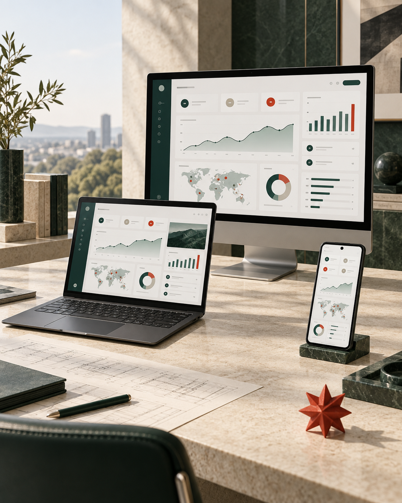

Movilidad y operación.
Aplicaciones para clientes, equipos en campo, ventas, logística, servicios y procesos conectados.
02 / PRODUCTOS DIGITALES
Diseñamos y desarrollamos aplicaciones para Android, Windows y macOS, conectadas con los sistemas, los equipos y los objetivos que sostienen tu operación.
Evaluemos tu proyecto
La tecnología debe resolver, integrarse y evolucionar.
ANDROID + WINDOWS + macOSDONDE TU PRODUCTO DEBE FUNCIONAR
Definimos la arquitectura según usuarios, operación, integraciones y crecimiento esperado.
Aplicaciones para clientes, equipos en campo, ventas, logística, servicios y procesos conectados.
Aplicaciones de escritorio para flujos internos, administración, análisis y operación especializada.
Productos para equipos creativos, profesionales y organizaciones que trabajan en el ecosistema Mac.
DE LA IDEA A LA OPERACIÓN
Reunimos estrategia, experiencia y tecnología para reducir decisiones aisladas y construir sobre una base sólida.
Descubrimiento, prioridades, alcance, riesgos y hoja de ruta.
Flujos, prototipos, interfaz y sistema de diseño.
Aplicación, backend, APIs, datos e integraciones.
Pruebas, despliegue, observabilidad y mejoras posteriores.
CÓMO CONSTRUIMOS
Organizamos el proyecto en etapas con entregables revisables, responsables y criterios de aceptación.
Entendemos usuarios, procesos, restricciones, datos e integraciones antes de comprometer una solución.
Alcance inicial, riesgos, arquitectura propuesta y hoja de ruta.
Convertimos los recorridos críticos en una experiencia navegable para validar decisiones temprano.
Flujos, prototipo, interfaz y criterios funcionales acordados.
Desarrollamos por incrementos y conectamos servicios, datos, autenticación y sistemas necesarios.
Versiones demostrables, documentación y control de calidad continuo.
Preparamos la distribución, medimos el comportamiento y priorizamos la siguiente etapa del producto.
Producto operativo, seguimiento y plan de evolución.
PROYECTOS CON AMBICIÓN
Buscamos relaciones con organizaciones que valoran la claridad, el diseño, la ingeniería y una colaboración cercana con quienes toman decisiones.
Revisaremos el contexto, el alcance inicial y las decisiones que conviene resolver primero.